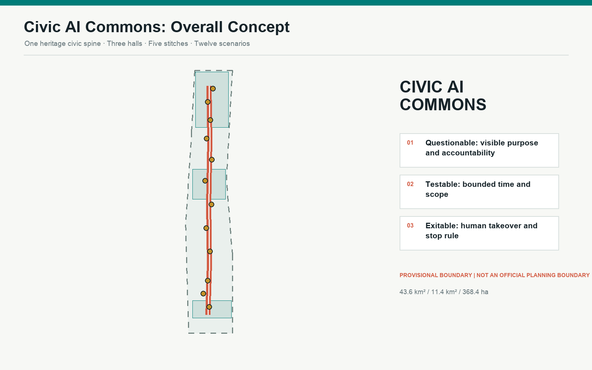
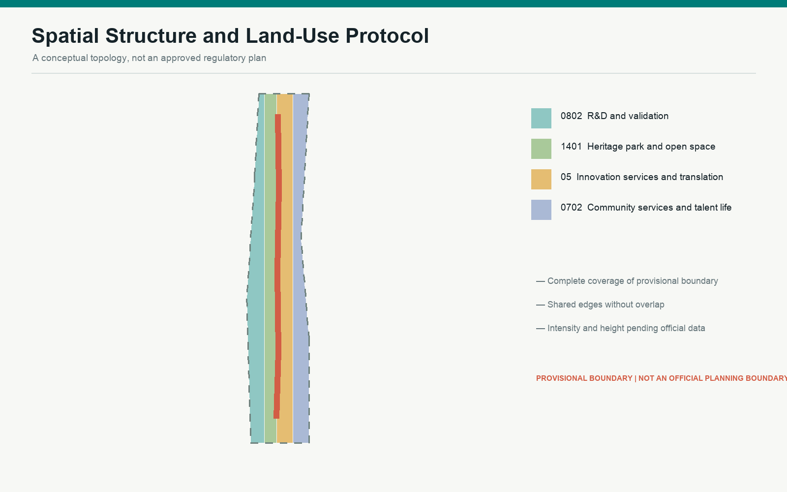
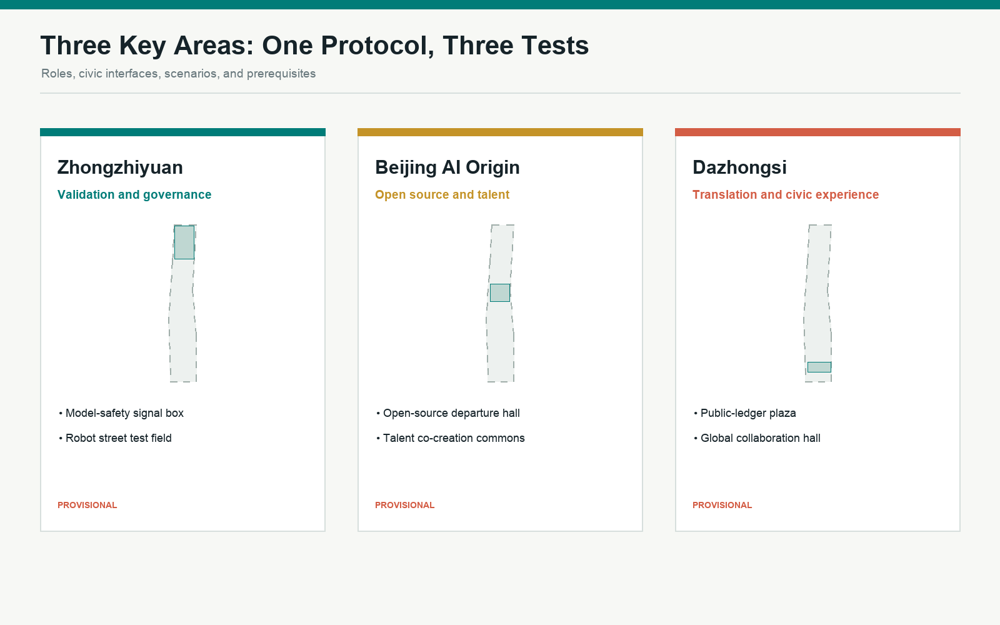
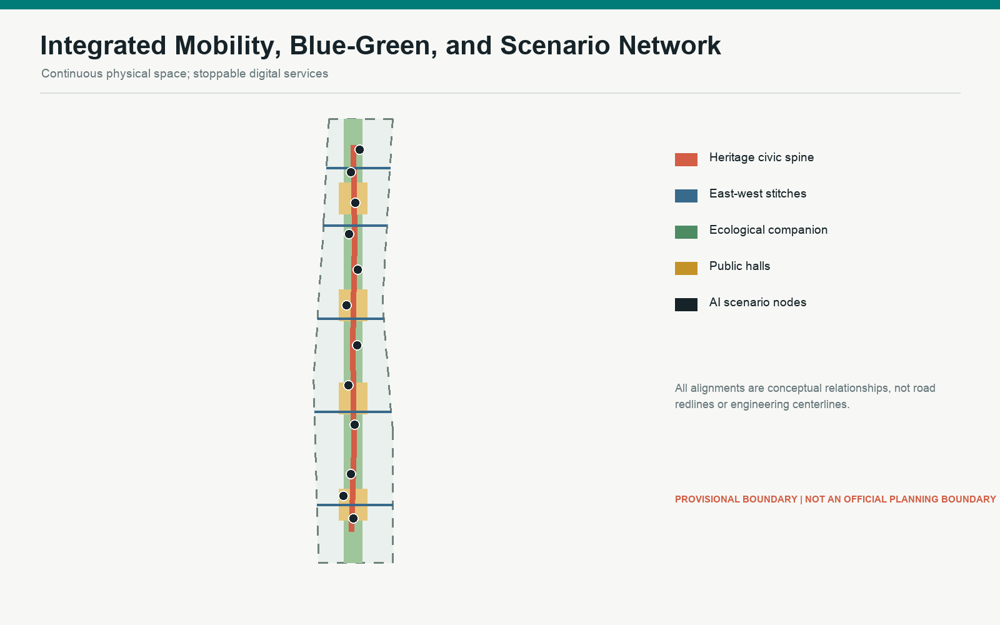
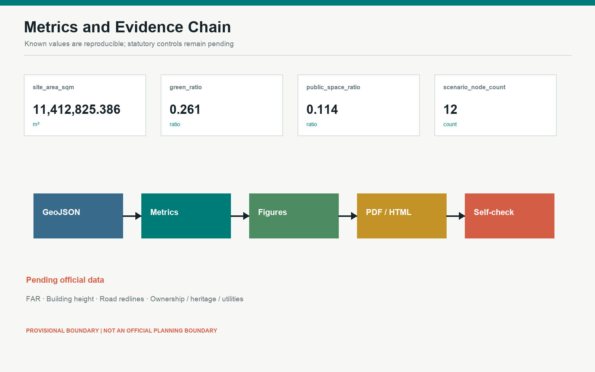

Retain first
Decide only after heritage, structural, and civic-interface review.




Decide only after heritage, structural, and civic-interface review.
Use existing space for human fallback and open collaboration.
Deepen only after regulatory, fire, ownership, and utility confirmation.

Announcement, cleared Taskbook, and local standard snapshots, used only within registered scope.
Boundary supports generation, display, and discussion, not official precision or statutory controls.
Official polygons, controls, building survey, ownership, heritage, utilities, and engineering conditions.